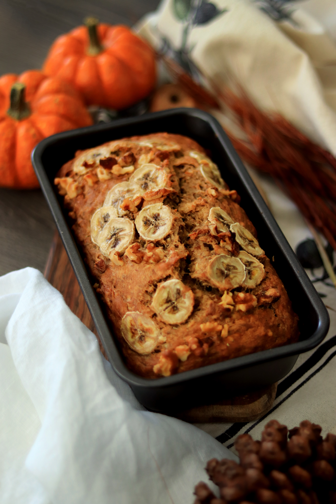

This banana bread recipe creates the most delicious, moist loaf with loads of banana flavor. Why compromise the banana flavor?
Friends and family love my recipe and say it's by far the best! It tastes wonderful toasted. Enjoy!

1. Combine the dry ingredients in one bowl.
2. Beat the butter and sugar in another bowl. Add the eggs and mashed bananas.
3. Add the wet mixture to the dry mixture.
4. Pour the batter into a loaf pan and bake in a preheated oven.
This banana bread is super moist thanks to butter, eggs, and brown sugar (which adds more moisture than white sugar).
Plus, mashed bananas have plenty of moisture on their own. Make sure you store the banana bread properly to keep it moist for several days.
This banana bread recipe should be perfectly baked after about an hour in an oven preheated to 350 degrees F.
You'll know it's done when a toothpick inserted into the center of the loaf comes out clean.
Make sure you let the bread sit in the pan for about 10 minutes before turning it out. Otherwise, it might not stay in one piece.